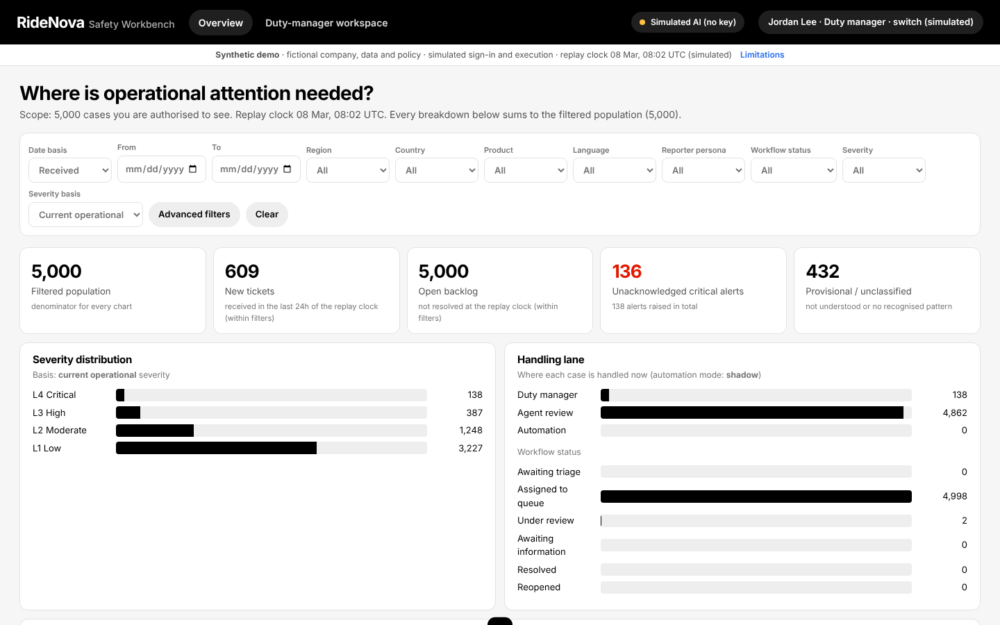
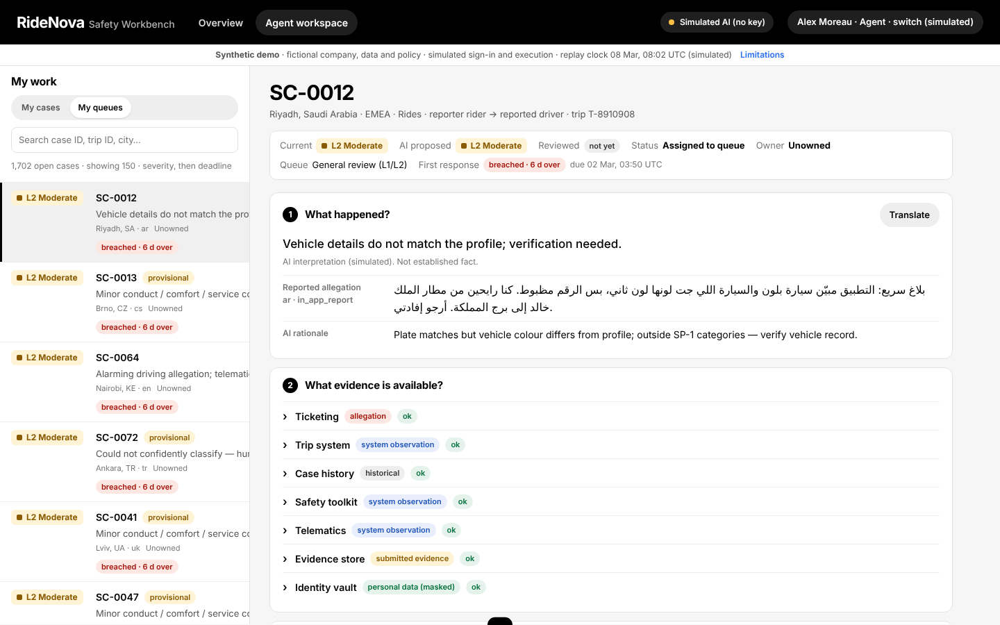
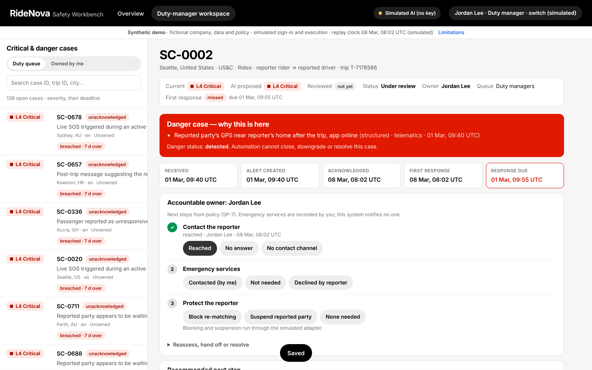
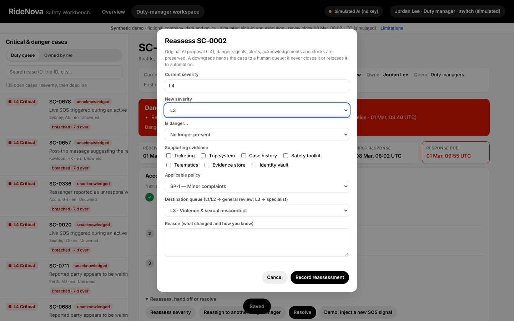

A role-based investigation console: automate the groundwork, not the accountability. Cases route to a duty manager (L4 or any danger), eligible upstream automation (shadow mode by default) or a qualified agent.
cd ridenova-safety npm install npm test # 34 unit + API tests npm run test:e2e # 5 browser workflow tests npm start # http://localhost:8080/console.html
Every breakdown reconciles to the filtered population. Severity is labelled by basis: AI-proposed, current or human-reviewed.

Five questions (what happened, evidence, policy, uncertainty, next step) and one primary action.

Why it is dangerous, the timing strip, accountable owner and policy next steps. Acknowledging is not a response.

Evidence, policy, a reason and a human destination are required. Alerts, clocks and the AI proposal are preserved, and a downgrade never closes or automates the case.
